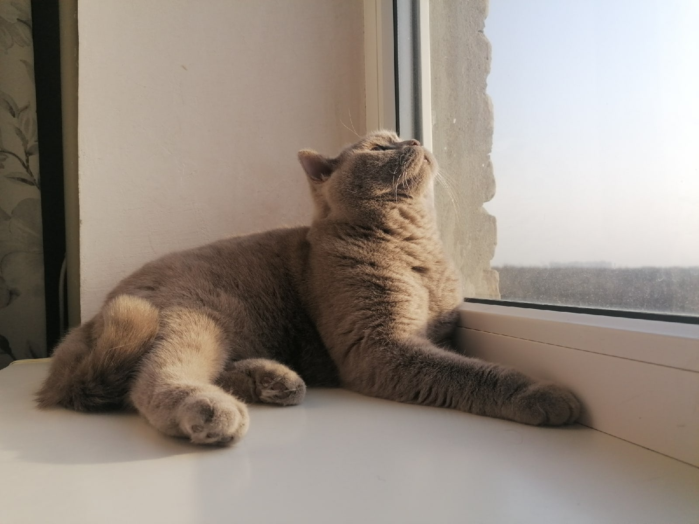
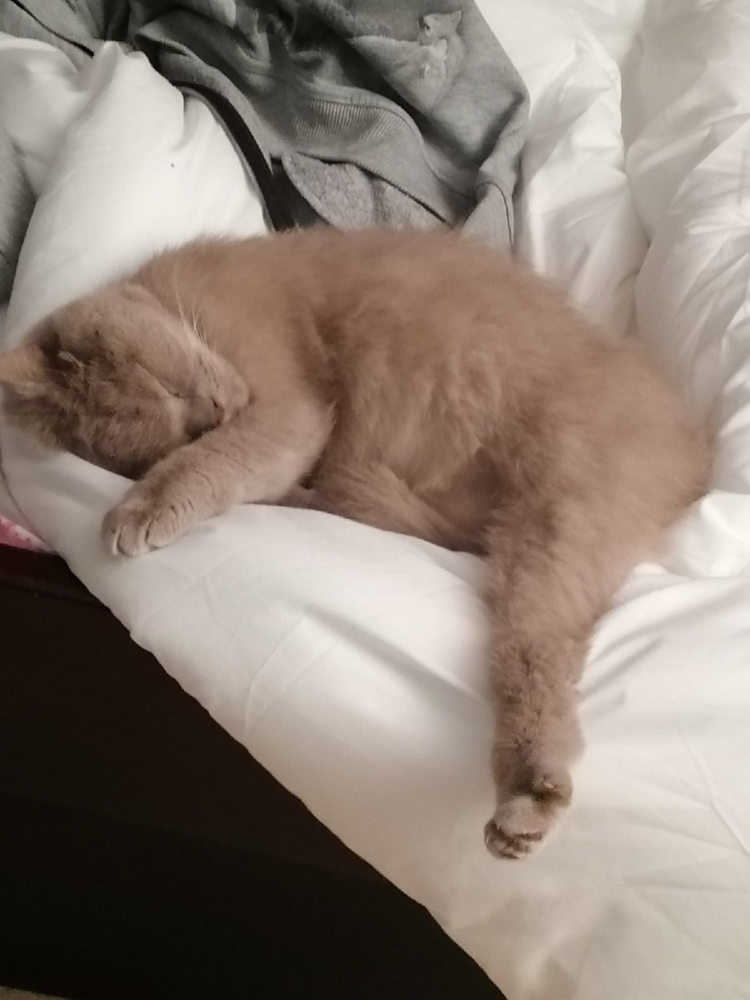
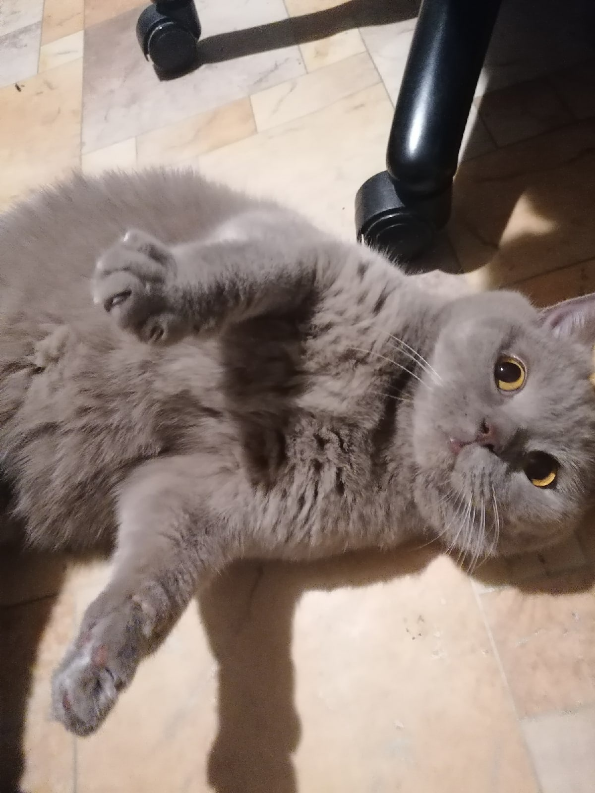
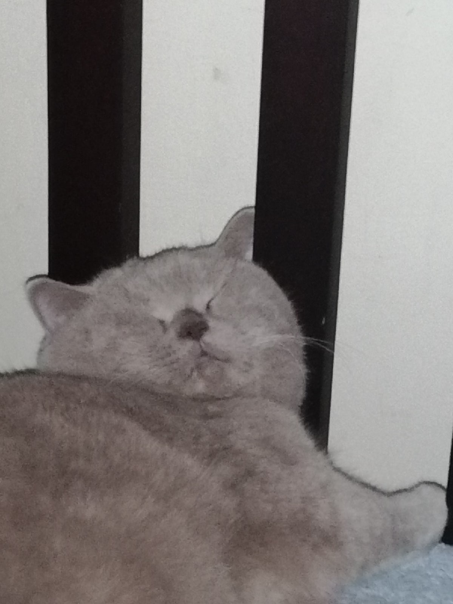
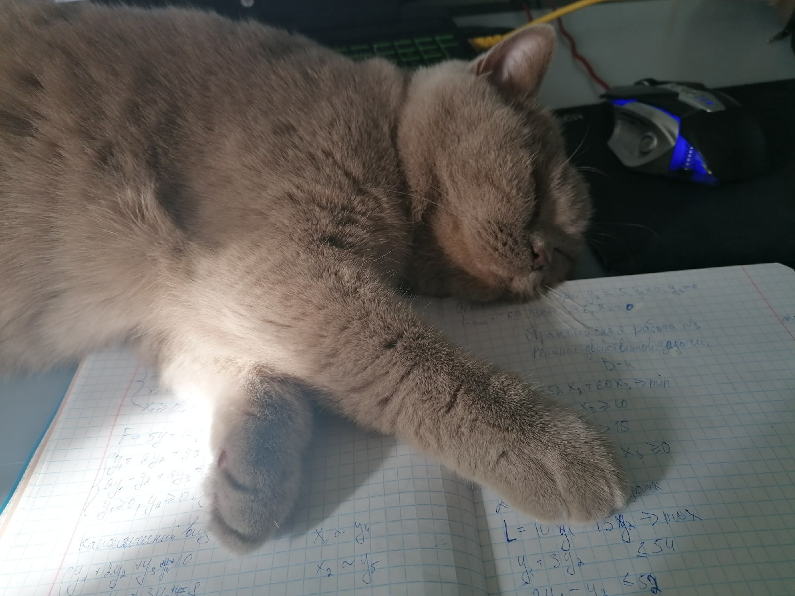

Буся
На этой странице я хотела бы рассказать про свою кошку Бусю.
Выглядит она вот так ⇓ ⇓ ⇓
Это шотландская короткошерстная прямоухая кошечка. На данный момент ей 9 лет, мы с мамой купили её у заводчицы в 2013 году. Мы выбрали бусю потому что она была самым спокойный и ленивым котенком, маме это сразу понравилось, потому что она не хотела гиперактивную кошку, ну а я просто хотела хоть какое-то домашнее животное)
Это единственное фото, которое я нашла, где она маленькая
В детстве она была очень болезненным котенком, поэтому часто приходилось ездить в ветеринарную клинику, где по итогу нам сказали, что у нее проблемы с желудком. Но по мере взросления все болезни ушли и сейчас она живет счастливой кошачьей жизнью.
 Мы всей семьей её очень любим и представить не можем, какая могла бы быть наша жизнь без этого мурчащего серого комочка :3
